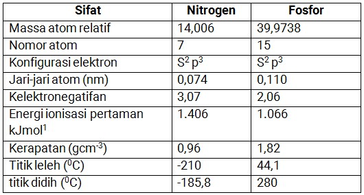
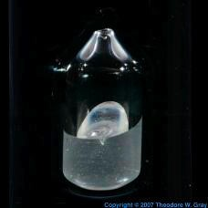
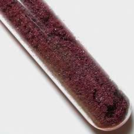
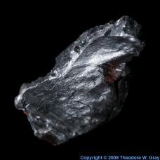
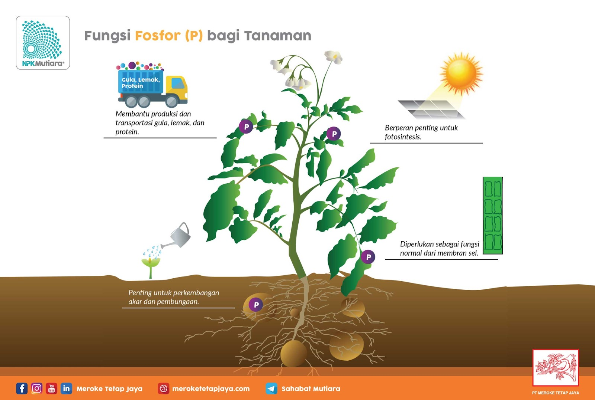
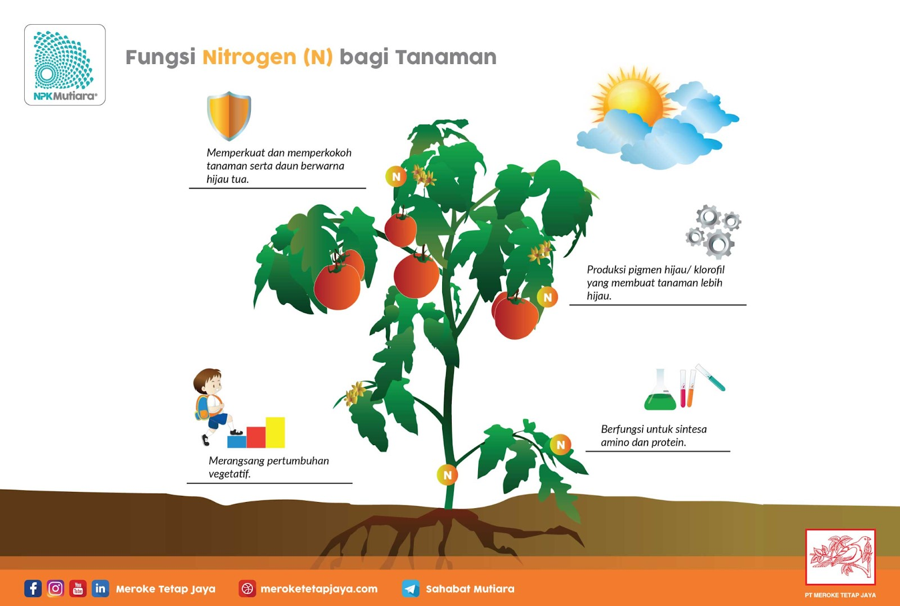

SENG

Seng atau yang biasa disebut Zinc adalah satu elemen yang dibutuhkan didalam tanah untuk berbagai jenis tanaman. Walaupun jumlahnya yang tidak banyak tetapi seng bisa menjadi faktor pembatas dalam pertumbuhan dan perkembangan tanaman. Dengan adanya unsur mikro seng tanaman bisa mendapatkan pertumbuhan terbaik pada setiap kondisi pertumbuhan tanaman. Seng merupakan logam yang berwarna biru putih, berkilau sebagai unsur kimia bersimbol Zn. Seng adalah logam yang banyak terkandung dalam kulit bumi dan terdapat dalam tanah, air dan udara sehingga banyak bahan makanan dan mengandung seng termasuk yang terutama bila air disimpan di dalam tangki.
Sifat Fisika

Sifat Kimia
- Seng memiliki konfigurasi elektron [Ar]3d104s2 dan merupakan unsur golongan 12 tabel periodik. Seng cukup reaktif dan merupakan reduktor kuat.
- Seng yang dibakar akan menghasilkan lidah api berwarna hijau kebiruan dan mengeluarkan asap seng oksida.
- Seng bereaksi dengan asam, basa, dan non-logam lainnya.
- Seng yang sangat murni hanya akan bereaksi secara lambat dengan asam pada suhu kamar. Asam kuat seperti asam klorida maupun asam sulfat dapat menghilangkan lapisan pelindung seng karbonat dan reaksi seng dengan air yang ada akan melepaskan gas hidrogen.
- Sifat kimiawi seng mirip dengan logam-logam transisi periode pertama seperti nikel dan tembaga. Seng bersifat diamagnetik dan nyaris tidak berwarna. Jari-jari ion seng dan magnesium juga nyaris identik. Seng cenderung membentuk ikatan kovalen berderajat tinggi. Seng juga hendak membentuk senyawa kompleks dengan pendonor N- dan S-. Senyawa kompleks seng kebanyakan berkoordinasi 4 ataupun 6 walaupun koordinasi 5 juga dikenal mempunyai.
Manfaat
Zinc (Zn) merupakan unsur hara mikro yang diperlukan oleh tanaman. Umumnya, unsur hara ini berfungsi sebagai katalis dan juga terlibat dalam perkembangan kloroplas. Rendahnya kadar Zn akan mengurangi toleransi tanaman terhadap penyakit. Jika terjadi kekurangan Zn yang parah, akan menyebabkan daun berwarna hijau kekuningan, daun dikelilingi bercak jaringan yang sudah mati, dan daun cenderung menjadi kecil.
Manfaat Zinc (Zn) adalah mengaktifkan enzim-enzim yang berkaitan dengan metabolisme karbohidrat. Pemanjangan sel dan ruas batang. Dalam jumlam yang sedikit dapat berperan dalam mendorong pertumbuhan tanaman.
Zn juga berfungsi dalam pembentukan hormon tumbuh (auxin) dan penting bagi keseimbangan fisiologis. Berperan dalam pembentukan hormon IAA, merangsang pertumbuhan dan perkembangan akar tanaman.

FOSFOR
Fosfor merupakan unsur nonlogam dalam tabel periodik diberi simbol P, nomor atom 15. Fosfor di alam sebagian besar ditemukan dalam senyawaan fosfat sebagai batu fosfat. Fosfor memiliki tiga bentuk (alotrop) yaitu fosfor putih, fosfor merah dan fosfor hitam.
Fosfor putih tersusun atas 4 atom P dengan bentuk tetrahedral, sedangkan fosfor merah dan fosfor hitam struktur yang dimiliki belum diketahui secara jelas namun diduga polimer atau gabungan dari molekul P4. Fosfor putih diperoleh dari batu fosfat yang dipanaskan dalam tanur listrik pada suhu sekitar 900°C dengan kokas dan silika (SiO2).
Pemanasan ini menyebabkan fosfor menjadi uap kemudian diembunkan pada kondensor sehingga diperoleh cairan fosfor putih. Sedangkan fosfor hitam diperoleh dari pemanasan fosfor putih putih pada tekanan tinggi dan memiliki kilau seperti logam serta bersifat semikonduktor, tetapi pada tekanan tinggi fosfor hitam menunjukan sifat seperti logam.
Sifat Fisika
1. Fosfor Putih
Fosfor putih adalah lilin, transparan padat. titik lelehnya adalah 44,1 °C (111 °F) dan titik didihnya 280 °C (536 ° F). Fosfor memiliki kerapatan 1,88 gram per sentimeter kubik. Jika disimpan dalam ruang hampa, fosfor menyublim jika terkena cahaya.
Sublimasi adalah proses dimana suatu perubahan zat padat langsung menjadi gas ketika dipanaskan, tanpa terlebih dahulu mengubah menjadi cairan. Fosfor putih berpendar. Fosfor Ini memberikan cahaya kehijauan-putih yang indah. Tidak larut dengan baik dalam air, meskipun tidak larut dalam cairan lainnya, seperti benzena, kloroform, dan karbon disulfida. Fosfor putih terkadang muncul sedikit kekuningan karena jejak fosfor merah.
2. Fosfor Merah
Fosfor merah berbentuk bubuk merah. Fosfor merah dapat dibuat dengan memanaskan fosfor putih dengan katalis pada suhu 240 °C (464 °F). Katalis adalah zat yang digunakan untuk mempercepat atau memperlambat reaksi kimia tanpa mengalami perubahan apapun itu sendiri. Tanpa katalis, fosfor merah menyublim pada suhu 416 °C (781 °F). Densitasnya adalah 2,34 gram per sentimeter kubik. Tidak larut dalam kebanyakan cairan.
3. Fosfor Hitam
Fosfor Hitam terlihat seperti bubuk grafit. Grafit adalah bentuk karbon yang digunakan dalam “mata” pensil. Fosfor hitam dapat dilakukan dengan menerapkan tekanan ekstrim untuk fosfor putih. Fosfor Ini memiliki kerapatan 3,56-3,83 gram per sentimeter kubik. Salah satu sifat yang menarik adalah bahwa unsur ini menghantarkan arus listrik meskipun menjadi non-logam. Merek yakin bahwa kunci untuk mengubah logam menjadi emas dapat ditemukan dalam urin. Sebaliknya, ia menemukan fosfor.
Sifat Kimia
1. Fosfor Putih
Fosfor putih lebih reaktif dan lebih beracun dibanding fosfor merah maupun fosfor hitam. Fosfor putih dikatakan lebih reaktif karena pada udara terbuka akan terbakar dengan sendirinya. Karena kereaktifan ini fosfor putih biasa disimpan dalam air atau alkohol ataupun larutan-larutan inert yang tidak melarutkan atau bereaksi dengan fosfor. Fosfor putih larut dalam bensena dan karbon disulfida.
2. Fosfor Merah
Fosfor merah bersifat tidak reaktif, kurang beracun. Fosfor merah digunakan sebagai bahan campuran pembuatan pasir halus dan bidang gesek korek api.
Manfaat Fosfor
Fosfor (P) merupakan salah satu unsur yang sangat dibutuhkan tanaman. Fosfor berfungsi sebagai pembentuk lemak dan protein, pembentuk inti sel serta dapat mempercepat pertumbuhan akar, memperkuat batang tanaman kacang hijau, meningkatkan produksi serta pemasakan buah dan biji-bijian.
NITROGEN
Nitrogen (N) merupakan salah satu unsur hara utama dalam tanah yang sangat berperan dalam merangsang pertumbuhan dan memberi warna hijau pada daun. Kekurangan nitrogen dalam tanah menyebabkan pertumbuhan dan perkembangan tanaman terganggu dan hasil tanaman menurun karena pembentukan klorofil yang sangat penting untuk proses fotosintetis terganggu.
Sifat Fisika
Sifat Kimia
Seperti yang sudah disebutkan di atas, Nitrogen memiliki sifat yang membedakan dengan senyawa lain. Salah satunya adalah sitat kimia yang dimiliki oleh Nitrogen. Nah, berikut ini adalah sifat-sifat kimia yang dimiliki oleh Senyawa Nitrogen.
1. Unsur yang Kurang Reaktif
Seperti yang sudah sedikit disebutkan sebelumnya, molekul Nitrogen yang masih alami cenderung bersifat kurang reaktif. Nitrogen ini bersifat tidak beracun serta tidak bisa menyebabkan kebakaran apalagi memperbesar pembakaran. Sifat ini juga berlaku ketika Nitrogen berada pada kondisi suhu yang rendah. Dalam kondisi suhu rendah, Nitrogen akan sulit bereaksi dengan berbagi unsur lain, kecuali unsur Lithium.
Namun berbeda jika molekul Nitrogen yang masih alami bereaksi atau dikombinasikan dengan unsur atau senyawa lain, maka akan memiliki sifat yang lebih reaktif seperti yang terjadi pada unsur Amonia (NH3). Selain itu, Nitrogen akan bisa bersifat reaktif ketika berada pada suhu tinggi, yaitu akan bereaksi dengan logam alkali serta alkali tanah.
2. Mudah Menguap
Sifat selanjutnya yang dimiliki oleh Nitrogen adalah mudah menguap. Karena sifatnya ini, Nitrogen juga dikenal mirip dengan Oksigen. Apabila berada di suhu kamar, maka Nitrogen akan mudah menguap. Berbeda dengan Nitrogen yang berbentuk cair, yang memiliki rentang suhu yang memungkinkannya untuk tetap berada pada keadaan cair.
3. Bersifat Asphyxiant
Berikutnya, Nitrogen juga memiliki sifat Asphyxiant. Artinya, sifat ini adalah siat dimana Nitrogen menggantikan Oksigen yang memiliki peran sangat penting dalam proses metabolisme dan respirasi makhluk hidup yang ada di bumi.
Gas yang bersifat Asphyxiant ini jika terpapar pada makhluk hidup bisa mengakibatkan dampak yang sangat berbahaya. Gas Asphyxiant bersifat tidak berbau, yang membuat orang yang menghirupnya tidak sadar jika sudah menghirup gas ini. Akibatnya, akan meningkatkan kadar CO2 dalam tubuh.
4. Bersifat Inert
Sifat kimia terakhir yang dimiliki oleh Nitrogen adalah bersifat Inert. Maksudnya, Nitrogen terbentuk dari 5 elektron. Dimana, tiga elektron diantaranya digunakan untuk berikatan pada unsur N lainnya, hingga kemudian terbentuklah ikatan rangkap tiga dengan sitat yang sangat stabil.
Manfaat
Merangsang pertumbuhan vegetatif tanaman secara keseluruhan, khususnya pertumbuhan akar, batang dan daun. Berperan dalam pembentukan zat hijau daun (klorofil) yang sangat penting untuk melakukan proses fotosintesis. Berperan dalam pembentukan protein, lemak dan berbagai persenyawaan organik lainnya
